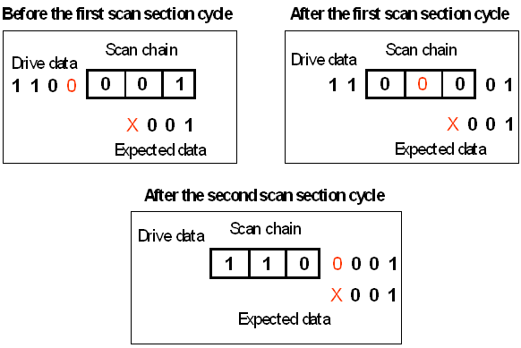

ASCII Vector Padding for Scan Vectors
When the ASCII device cycle of a scan instance has an x-mode factor > 1, the number of scan vectors in this instance must be a multiple of the x-mode factor. Now it is possible that the length of the scan chain is not a multiple of the intended x-mode factor. For instance, the scan chain can have length 3, but the ASCII device cycle of the scan instance has an x-mode factor 2. In this case v2b automatically increases the template length to the next multiple of the x-mode factor and inserts padding characters into the scan instances.
The padding characters for the scan input pins can be inserted at the start or the end of the instance data. This is controlled by the SCAN_TYPE keyword; with the option STANDARD, they are inserted at the start, with BS_INTEST, at the end. The padding characters for the scan output pins are always inserted at the end.
Padding the input data at the start serves to neutralize the padding vectors. For in this way, the padding values for the scan input pin have no influence on the next parallel section, since they have already been shifted out of the scan chain after completion of the scan section; and they can also be neutralized when they appear at the scan output pin because they will be compared to a padding compare value.
The following figure illustrates the principle:

The figure displays the data in reverse temporal order. The rightmost state characters are the ones that are applied first. This is in contrast to the VECD commands for the resulting waveform DC/DC power units, which specify the data in temporal order, and whose binary data start with the waveform for the characters 00 (drive data), and 10 (compare data).
By default, v2b selects the padding character for scan vectors according to the same rules as those for parallel vectors (see X-Mode ASCII Vector Padding), but you can control the state characters to be used for padding by defining a padding translation file and adding the name of this file to the -xpi parameter of v2b. For more information on padding control files, see The Padding Translation File.